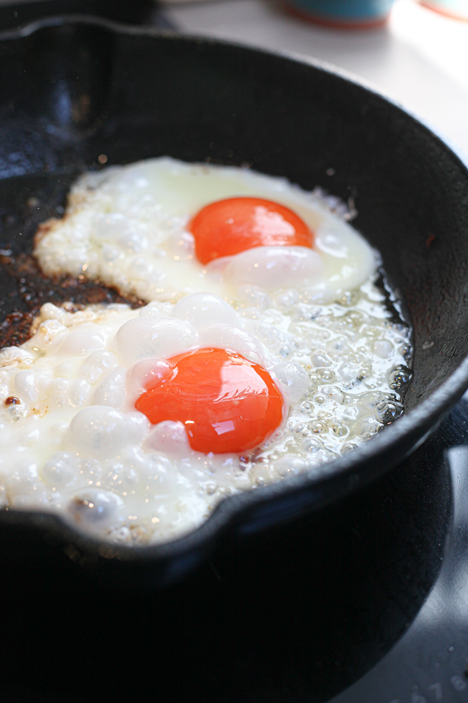

Butter Fried Eggs

Ingredients
Steps
- Heat a stainless steel pan (none of those bullshit non-stick loaded with PFAs and other plastics) so that when you add a tablespoon or so of water,
the water forms little balls that race around the pan. If the water bubbles and evaporates, the pan has not been heating for long enough. Doing
this ensure that the pan is non-stick.
- Turn down the heat to low/medium-low for about 1.5 minutes.
- Add 5-10 grams of butter the pan and coat the entire pan.
- Once the butter is slightly browned, crack three eggs into the pan. Salt to taste.
- Cook until desired doneness.
Nutrition
- Carbs: 0.0g
- Fats: 20.5g
- Proteins: 18.0g